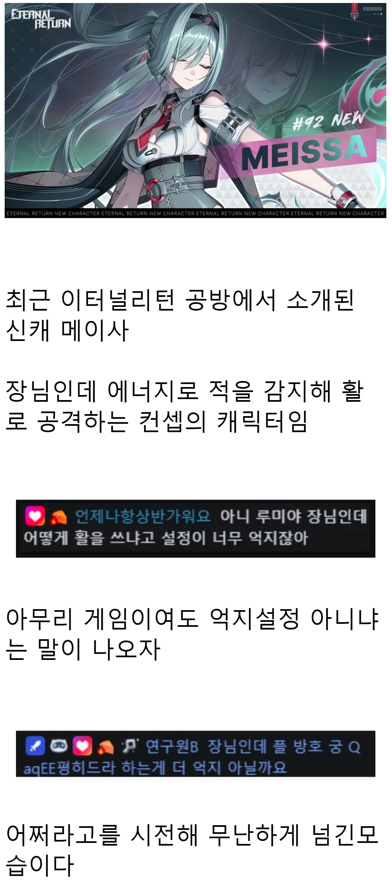

쪼~기 옆동네 애들은 잘만 하거등요

쪼~기 옆동네 애들은 잘만 하거등요
존윅 4도 안봤나.
ㅋㅋㅋ 근데 리신 콤보 저거야? 궁Qaq가 되는거였나
안될듯. 궁A도 겨우 들어가는데.
벽에 붙어서 벽으로 찼나봐
와드방호? 순이리말 쓰세요
따라해보세요 감카무청
씹덕판에선 모든 게 모에요소일 뿐인데ㅋㅋㅋㅋ
맞말추
씹덕 캐릭파라 하고 싶은데 템 제작하는게 진입장벽임
실컷 모으다 디지는거 두번 하니까 하기 싫어졌음
사람이 초능력 쓰는 건 억지 설정 아니고?
신토불이 이터널이턴 지금 바로 시작
리신첨보냐
씨발 저년 너무 쌔
언제 패치하냐
첫출시한 캐릭인데 수상할정도로 익숙한 조작감에 빠르게 적응한 유저들